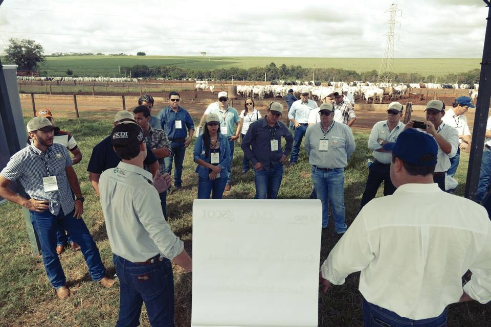
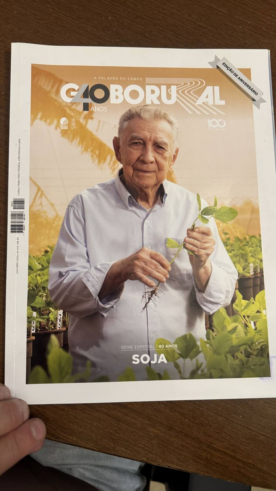

A CMA na imprensa do agro.
O que o mercado, os rankings e as redações já contaram sobre a Monte Alegre, sempre com fonte e data.

"Boas práticas reconhecidas"
A CMA na matéria do Prêmio Fazenda Sustentável, iniciativa de Rabobank, Imaflora e Cargill.
2026Top 20 Confinadores do Brasil
O ranking anual da pecuária intensiva coloca a CMA entre os maiores confinamentos do país, com projeção de crescimento.
2025Ler matéria → Forbes AgroEntre os exemplos de sustentabilidade
A publicação citou a CMA entre os confinamentos brasileiros que servem de referência em práticas sustentáveis.
2022Ler matéria → Dinheiro RuralCampeã "As Melhores" · Confinamento
Vencedora da categoria no prêmio que reconhece a melhor gestão do agronegócio brasileiro.
2018Ler matéria → Scot Consultoria1º confinamento certificado Rainforest
O anúncio da certificação pioneira, oficializado no Encontro de Confinadores, com auditoria do Imaflora.
2016Ler matéria →Sala de imprensa
Jornalista? Solicite o press kit da CMA (fatos, números validados e banco de imagens oficial) pelo e-mail contato@cma.agr.br.
SempreSeu gado no confinamento pioneiro em certificação do Brasil.
Isenção total de ICMS em SP, trava de preço na B3 e o relatório do seu lote em uma página. Simule sua parceria.